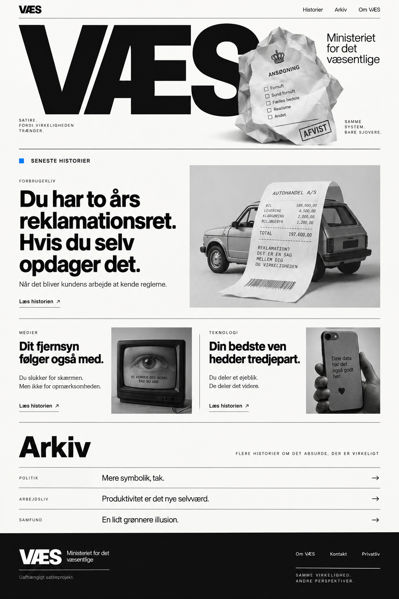

Forbrugerliv
Du har to års reklamationsret.
Hvis du selv opdager det.
Når det bliver kundens arbejde at kende reglerne.
Læs historien ↗
Forbrugerliv
Når det bliver kundens arbejde at kende reglerne.
Læs historien ↗Medier · Satire
Samsung og LG tager dit privatliv meget alvorligt.
Læs historien ↗Teknologi
Du deler et øjeblik.
De deler det videre.
Flere historier om det absurde, der er virkeligt